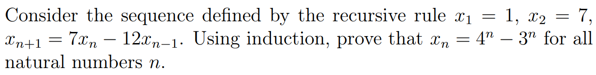
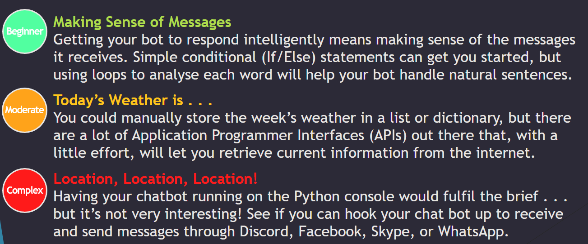

If you do plan to use any of this, please either don’t blatantly copy me as that’s plagarism or if you are using this as a reference, I suggest you reference me or this will also be flagged :p.
In my first year, I had done a range of different modules to get me started on my course. They are the following:
Programming and Algorithms is the module that introduces Python 3 to all. We had started to learn the bare minimum basics and then immediately jumped to the higher level programming like mathematics in Python. If you know anything about me, it’s a known fact that I despise mathematics in programming so much. I don’t really have much that I can show on this module since I had been doing Python 3 for the last 3 years prior to this module starting. However, here is a snippet from the course that we had to solve as part of a lab task:
def bubbleSort(array):
n = len(array)
while (n > 0):
lastModifiedIndex = 0
currentIndex = 1
while (currentIndex < n):
# if the item at the previous index is greater than the item at the `currentIndex`, swap them
if (array[currentIndex - 1] > array[currentIndex]):
# swap
temp = array[currentIndex - 1]
array[currentIndex - 1] = array[currentIndex]
array[currentIndex] = temp
# save the index that was modified
lastModifiedIndex = currentIndex
currentIndex += 1
# save the last modified index so we know not to iterate past it since all proceeding values are sorted
n = lastModifiedIndex
return nNow I wouldn’t call this bad except it was required in the 9th week of the module - at this time, people still barely knew how to define a variable.
Software Design is the module that describes the different fundamentals about software design - mainly Object Oriented Programming (OOP), development and management. We had used different tools to learn about the different software development frameworks to maintaining it, agile and scrum frameworks using Microsoft Azure (we had a live demonstration about this a lecture hall one day). I personally didn’t like this module however I had learnt some valuable team building skills in this module.
Mathematics for Computer Science is the module I am so glad I passed first time. I hated this more than the prior software design module. The mathematics is a nice skill set to learn as this the way that computers process and how programming languages work. At the start of this module, it was all over the place as we initially started on “counting” then we jumped into the more higher level of mathematics. To start it off, we had to learn set theory; logic such as truth tables and the act of proving if x == y and vice versa. We all needed to do it, but this was a lot to do straight away. Here is an example of one of the questions I had in the first mathematics examination:

Activity Led Computer Science Project 1 is a module that allows us to use all that we have been learning in the other modules of this semester to let us all show our knowledge of what we know. The brief of this module:

This doesn’t seem all bad, but I had fufilled the entirety of the brief and only had gotten 40% out of the full 100%. Check my code and you can be the judge and see what grade I deserved.
Object Oriented Programming (OOP) is the module that allows us to build from our software design module where we had learnt the fundamentals of OOP and the bare understanding of Python in 4000CEM. In this module however, we had done C++ instead of the continuation of Python. The assessment for this was also closed book, meaning that we couldn’t do it elsewhere and only under supervision in the classroom. I had actually preferred this over with other people as I could concentrate well and get my work done in silence bar the mouse clicks around the room. Luckily I had passed both closed book examinations first time, thanks to me learning the language the way I tend to learn most things in life, making a massive repo about it. Click here to view it, there is a lot there.. Fun fact about this: I learnt all of that within 2 weeks and passed first time while also getting a 1st in both exams.
Copyright © Taran Nagra 2023. All rights reserved.